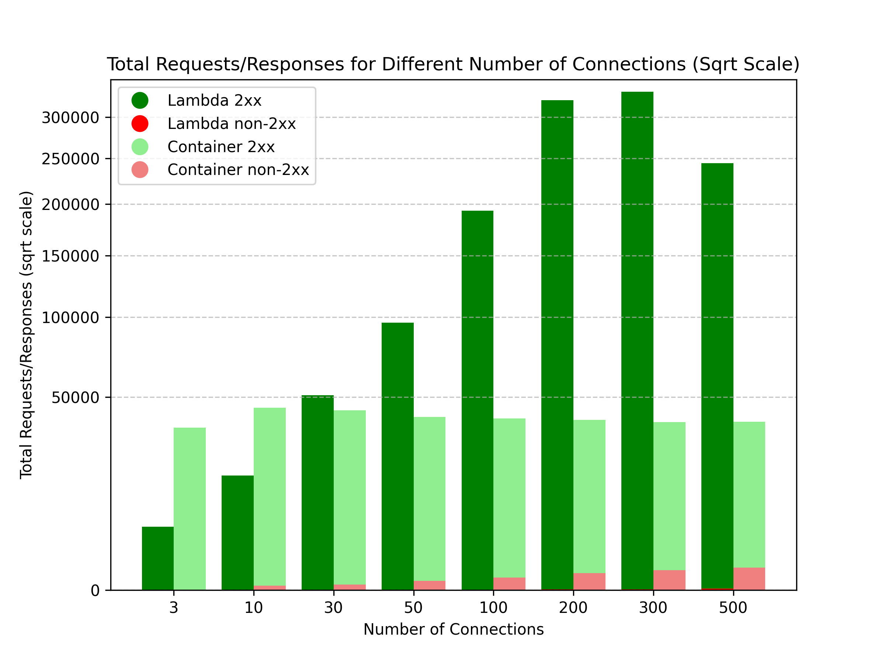

Hosting Next.js isn't just about Vercel. Sure, Vercel has unbeatable support for Next.js and offers a fantastic developer experience…
…but, have you ever thought:
Today, I'm diving into how Next.js can smoothly integrate with key AWS services: Lambda, Lambda@Edge, and Fargate. Opting for these services over managed solutions like Vercel can bring you greater flexibility and significant cost savings.
In this post, I’ll be deploying the same Next.js app using these AWS services, running a bunch of performance tests, and then crunching the numbers to figure out the costs for each setup. Ready to see how it goes?
If you're diving into Next.js and aren't quite sure how to deploy your app, here's the lowdown on your options.
You've got two main paths:
For deploying Next.js apps, Vercel is a top pick. It's built by the same folks who created Next.js, so you get a smooth experience, easy scaling, and more right out of the box. Netlify offers a similar easy setup with plenty of features.
I've personally used both Vercel and Netlify for various projects thanks to their generous free tiers. But, there are a couple of things to keep in mind:
So what to do if these options don't fit your needs? That's where self-hosting on AWS comes into play.
Not into the fully managed route or need something more customizable? You're not alone. You can self-host your Next.js app on a cloud platform like AWS, which we'll focus on here. Self-hosting's got a couple of big perks:
Next.js suggests containerizing your app for a straightforward deployment process. This method is pretty simple and can keep costs down.
But here's the catch: While Vercel and Netlify offer free hosting for low-traffic sites, running a container on AWS means you'll pay regardless of traffic.
That's why some devs have looked into hosting Next.js apps on AWS Lambda to cut costs without losing the perks of serverless, like paying per request and scaling on demand.

However, getting a Next.js app to run on Lambda isn't always straightforward, thanks to the framework's complexities.
Thankfully, tools like Stacktape and SST simplify this process. They leverage OpenNext, an open-source adapter that makes Next.js apps Lambda-friendly. Props to the OpenNext team and community for making serverless Next.js a reality.
We're putting 3 Next.js deployment setups to the test:
| # | Environment type | Configuration | Example Project |
|---|---|---|---|
| 1 | AWS Lambda | 1024 MB memory, built with OpenNext | example project |
| 2 | AWS Lambda@Edge | 1024 MB memory, built with OpenNext | example project |
| 3 | AWS ECS Fargate container | 0.5 CPU, 1024 MB memory, HTTP API Gateway | example project |
All setups are in the eu-west-1 (Ireland) region. However, Lambda@Edge is a bit different—it's set up in us-east-1 but works globally.
Each environment is ready for the real world, CDN included. But I'm focusing on how the compute engines themselves perform, so I'll be sending requests straight to Lambda/Container origins. This mimics how CloudFront (CDN) interacts with these origins.
To do this, I've got two EC2 instances ready: one in eu-west-1 and another in us-east-1.
We aimed to see how quick responses were from different AWS setups under light load.
Here's how we did it:
For Lambda and Container setups, we tested response times twice:
eu-west-1: This is where the servers are, mimicking a nearby user.us-east-1: This simulates a user far from the server.For Lambda@Edge, we only tested from us-east-1. Since Lambda@Edge runs closer to the user globally, testing from eu-west-1 would be similar to the standard Lambda test.
We skipped the first response in each test to avoid measuring the cold starts of Lambda functions. Cold starts are longer due to the size of Next.js app packages, but they're not our focus here. They can be lessened in real apps with techniques like using warmer.
How we sent requests:
- To Containers, through
HTTP API Gateway, directing traffic straight to them.- To Lambda setups, we used the
Lambda URL. It's not exactly how CloudFront connects to Lambda@Edge, but it's close enough for our tests.
| Origin | Requests from | Avg. Latency (ms) |
|---|---|---|
| Ireland Container | Ireland | 57.94 |
| Ireland Lambda | Ireland | 86.27 |
| Virginia Lambda (Lambda@Edge) | Virginia | 317.45 |
| Ireland Container | Virginia | 377.83 |
| Ireland Lambda | Virginia | 432.91 |
Responses were fastest from servers in the same region as the request. Containers edged out Lambda in speed slightly.
But why was Lambda@Edge slower? Despite running closer to the user, its setup with OpenNext and internal caching of Next.js impacts its speed.
Next.js uses caching to speed up your app and cut costs. It stores rendered pages and data with fetch data cache and full route cache. But, this caching can affect speed on Lambda@Edge.

Usually, caches live on the server hosting the Next.js app, like in our Container setup.
Lambda functions don't have their own storage, so OpenNext uses an S3 bucket for shared cache. This means all Lambda functions can use the same cache data.
But there's a catch with Lambda@Edge. If the cache's S3 bucket is in a different region, Lambda@Edge has to fetch data across regions, causing delays. Still, our tests show Lambda@Edge is faster than getting a response from another region. And for paths without cache, Lambda@Edge is much quicker.

For load testing, I'm using autocannon, a NodeJS tool, with these settings:
I'll test Lambda and Container setups from an eu-west-1 EC2 instance:
/) path.No Lambda@Edge test—it'd be similar to the regular Lambda setup.
Lambda setups can scale massively without much limit, giving each request full memory and CPU. This is great for handling heavy tasks like database operations.
Containers, though, share resources among all incoming requests. This can limit performance per request.
Normally, you can scale containers up (more resources per container) or out (more containers for the load). For this test, I didn't scale our container to see its baseline capacity.

Interestingly, Lambda showed higher latencies than expected in this test, even though AWS Cloudwatch metrics suggest an average duration around 25 ms. Surprisingly, we saw latencies around 300ms at low load, with the lowest latencies still above 200ms. This indicates delays might not be from Lambda's execution itself but perhaps from network delays or Lambda URL limitations.
Increasing the load to about 200 connections (~6000 req/sec) made Lambda's latency go up. It seemed like throttling might be the cause, but with only two 429 errors out of over 250,000 requests, it wasn't clear.
Further testing suggested Lambda's execution time wasn't the issue since the average stayed low even under heavy load. It looks like Lambda's URL might be queuing requests, causing the increase in latency without sending many throttling errors. This theory matches our observations, though there's no official confirmation—just an unanswered question on the AWS forum with similar queries.
As we increased traffic, container latency began to spike. At about 70 connections (~700 req/sec), latency hit 1 second and then increased rapidly. The next chart shows a rise in 503 errors due to this overload.

This confirms the container can handle roughly 4500 requests per minute, aligning with our earlier ~700 req/sec estimate.
Remember, this test's setup might differ from real-world Next.js apps. Your app, especially in production, could be doing more complex tasks like pulling data from databases or APIs.
From Test 2's data on container capacity, we can create pricing models to see when Containers or Lambdas are more cost-effective.
We're looking at 4 setups:
I've included
Fargate container + Application Load Balancerfor a fuller comparison, even though it wasn't in the initial tests. It's comparable to the HTTP API Gateway setup but offers a broader view.
Here's what AWS charges:
Monthly cost breakdown (x = monthly requests):
| Formula | Description | |
|---|---|---|
| + | average_lambda_function_duration * 0.0000000167 * x |
Execution time cost |
| + | 0.0000002 * x |
Cost per request |
| + | x * 0.0004 / 1000 + x / 50 * 0.005 / 1000 |
S3 bucket cost (1 GET per request, 1 PUT every 50 requests) |
AWS pricing details:
Monthly cost formula (x = monthly requests):
| Formula | Description | |
|---|---|---|
| + | average_lambda_function_duration * 0.00000005001 * x |
Execution time cost |
| + | 0.0000006 * x |
Cost per request |
| + | x * 0.0004 / 1000 + x / 50 * 0.005 / 1000 |
S3 bucket cost (1 GET per request, 1 PUT every 50 requests) |
AWS charges for this setup are as follows:
Here's how to calculate monthly costs (x = number of requests per month):
| Formula | Description | |
|---|---|---|
| + | 17.5 * ceil((x+1) / (2592000 * number_of_req_per_sec_handled_by_single_container)) |
Cost of running Fargate (2592000 seconds = 1 month) |
| + | x / 1000000 |
Cost for using HTTP API Gateway |
AWS pricing for this configuration:
Monthly cost formula (x = number of requests per month):
| Formula | Description | |
|---|---|---|
| + | 17.5 * ceil((x+1) / (2592000 * number_of_req_per_sec_handled_by_single_container)) |
Cost for Fargate container, considering a month has 2592000 seconds |
| + | 16.2 |
Monthly fixed fee for Application Load Balancer |
| + | x / (2592000 * 1000) * number_of_lcus_needed_for_thousand_req_sec * 5.76 |
Additional fee for LCUs based on usage |
I tweaked the formulas a bit by introducing some constants. To get the full picture, we'll set specific values for these constants. Later, I'll show how changing these values affects costs:
average_lambda_function_duration: The test showed an average of 27ms, but real-world sites might see higher times due to complexity. We'll use 50ms for this simulation.
number_of_lcus_needed_for_thousand_req_sec: We'll set this at 50, but it might vary based on the data your requests handle.
number_of_req_per_sec_handled_by_single_container: Although the test container managed over 500 req/sec, real-world use might lower this number. We'll estimate 100 req/sec for simplicity.

Low average load means Lambda is usually cheaper—great for sites where CDN caching handles most content.
But as Lambda functions get busier, costs rise. More traffic to your Next.js app could mean:
At 3 req/sec for Lambda@Edge and 9 req/sec for Lambda, switching to container setups might be better.
Note: Many sites won't hit these traffic levels to the server due to CDN caching, making Lambda cost-effective.
Changing constants like average_lambda_function_duration, number_of_req_per_sec_handled_by_single_container, or cache request rates will affect your costs.
Here's another comparison with average_lambda_function_duration at 30ms and number_of_req_per_sec_handled_by_single_container at 50:

Remember, these estimates don't cover AWS Data Transfer fees, which are similar across all environments and don't significantly impact cost comparison.
Our exploration into Next.js hosting on AWS has given us valuable insights into how different setups perform. It's important to note, though, that your app might see different results based on a variety of factors.
Here are the main points we've learned:
Lambda is great when:
Containers might be better if:
Appreciate you sticking around till the end! If you catch any mistakes in our data or you're curious about other comparisons, just shout.